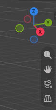
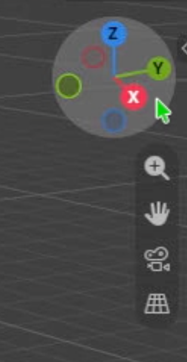

3D Navigation via Gizmo

Click or drag the gizmo
- Axis label: jump to that orthographic view.
- Matching empty circle: jump to the opposite view.
- Hover near the gizmo to reveal a circle; drag inside it to orbit.

Use the four tool icons
- Magnifying glass: drag up/down to zoom.
- Hand: drag to pan up, down, left, or right.
- Camera: toggle camera view.
- Grid: toggle orthographic / perspective.